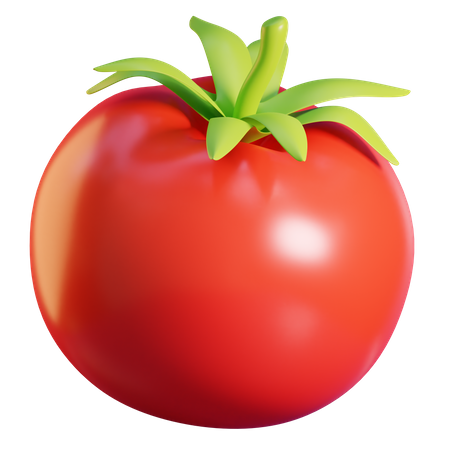
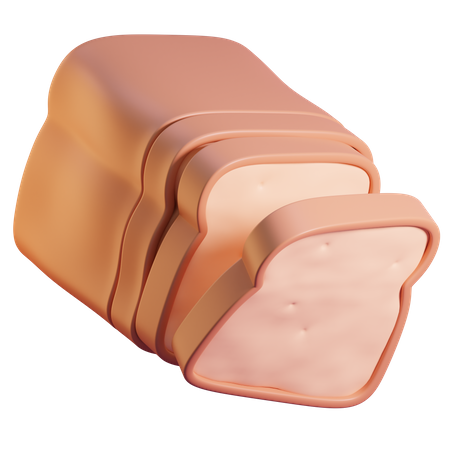

    <!-- Header logo & content -->

    <header class="header-logo">
        
        <h1>Recetas fáciles con 
          <br>lo que tienes en la nevera</h1>
        <p>Selecciona tus ingredientes</p>
      </header>
  
      <!-- Filter buttons -->
  
      <div class="button-container">
        <button class="button-style">Todos</button>
        <button class="button-style">Frescos</button>
        <button class="button-style">Carnes</button>
        <button class="button-style">Verduras</button>
        <button class="button-style">Frutas</button>
      </div>
  
      <!-- Ingredient cards -->
  
      <div class="cards-container">
        <button class="ingredient-card"> 
          
          <h3> Tomate</h3>
        </button>
        <button class="ingredient-card"> 
          
          <h3> Lechuga</h3>
        </button>
        <button class="ingredient-card"> 
          
          <h3> Cebolla</h3>
        </button>
        <button class="ingredient-card"> 
          
          <h3> Huevo</h3>
        </button>
        <button class="ingredient-card"> 
          
          <h3> Maiz</h3>
        </button>
        <button class="ingredient-card"> 
          
          <h3> Berenjena</h3>
        </button>
        <button class="ingredient-card"> 
          
          <h3> Pan de molde</h3>
        </button>
        <button class="ingredient-card"> 
          
          <h3>Zanahoria</h3>
        </button>
        <button class="ingredient-card"> 
          
          <h3> Pimiento rojo</h3>
        </button>
      </div>
  
      <!-- Fixed Menu -->
  
      <div class="fixed-menu">
        <button class="search-button"> <h3> Buscar recetas</h3> </button>
        <button class="add-button"> <h3> Añadir recetas</h3> </button>
      </div>
  